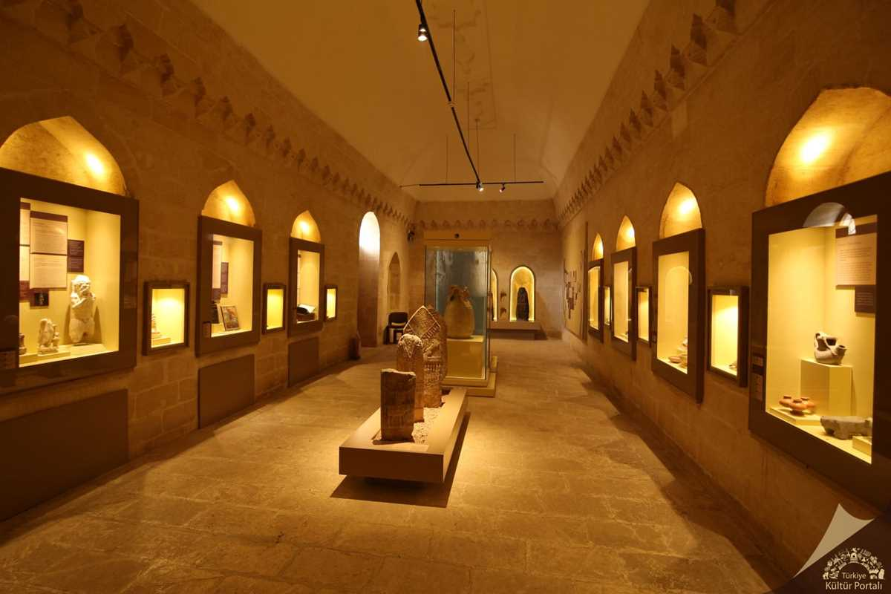
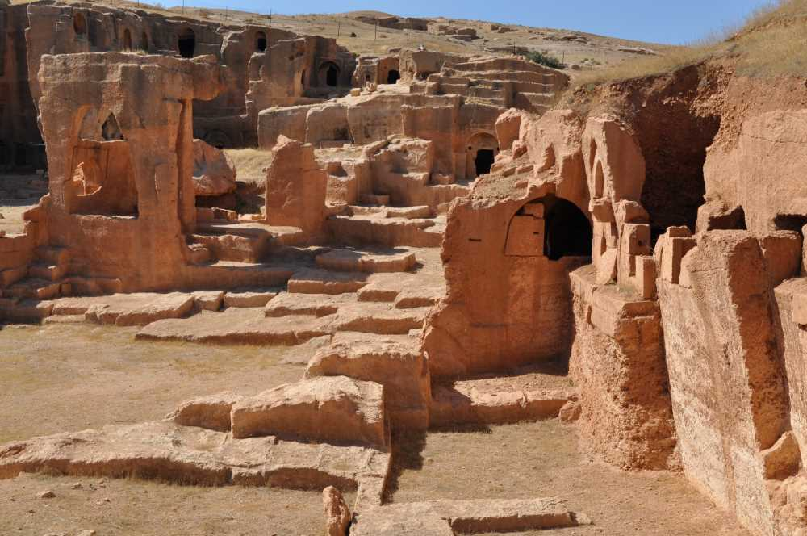

MARDİN
Türkiye'nin kültür ve inanç turizmi açısından önemli şehirlerinden Mardin binlerce yıllık taş yapılar, medreseler, antik kentler ve camilerle ziyaretçi çekiyor.
Farklı kültürlerin bir arada yaşadığı Mardin kültürel zenginliğiyle büyülüyor.
Mezopotamya'da bulunan ve birçok medeniyet için önemli bir şehir olan Mardin'de benzersiz bir tatil geçirmeniz için tüm detayları sizin için derledik.
Mardin'in Genel Özellikleri
Dicle ve Fırat nehirleri arasında yer alan Mardin Güneydoğu Anadolu Bölgesi'nin en çok merak edilen şehirlerinden biridir.
Mardin, mimari, etnografik, arkeolojik, tarihi ve görsel değerleri ile zamanın durduğu izlenimini veren Güneydoğunun şiirsel kentlerinden biridir.
Mardin'de, farklı dini inanışlar paralelinde, sanatsal açıdan da tarihi değeri olan camiler, türbeler, kiliseler, manastır ve benzeri dini eserler barındırmaktadır. İpek Yolu güzergahındadır.
Mardin'in İklimi
Mardin ilinin iklimi üzerinde kuzeydeki yüksek dağlar etkili olmaktadır. Bölgede kış döneminde oluşan yüksek basınç alanı, kış aylarının soğuk geçmesine yol açar.
Bir yandan güneydeki çöl ikliminin etkisi altında bulunması, bir yandan kuzeydeki yüksek dağların serin hava kütlelerinin bölgeye girişini engellemesi nedeniyle ilin genelinde yazlar çok sıcak geçerken karasal iklimin tipik özelliği görülür.
Ancak Derik, Nusaybin ve Savur ilçelerinde pamuk, fındık ve zeytin gibi ürünlerin yetişmesi mikroklima özelliğinin yörede hüküm sürerken Akdeniz iklimi ile karasal iklimin ortak özelliklerine sahiptir.
Nüfusu
Mardin nüfusu TÜİK tarafından 870.374 olarak açıklanmıştır. Açıklanan bu nüfusun Mardin erkek nüfusu 436.361 ve Mardin kadın nüfusu 434.013 olmuştur. Mardin ilinin nüfusu en büyük ilçesi Kızıltepe (267.151) , Mardin ilinin nüfusu en küçük ilçesi Yeşilli (13.621) olmuştur.
Mardin'de Gezilecek Yerler
- Kasımiye Medresesi
Artuklular döneminde yapımına başlanan Kasımiye Medresesi turistlerin en çok ziyaret ettiği medresedir. Yapıldığı dönemde Moğol saldırılarından dolayı yarım kalan ve 1457-1502 yılları arasında Akkoyunlu döneminde tamamlanabilen etkileyici medrese, tek kubbeli ve açık avlulu olarak düz kesme taşlarla inşa edilmiş.
Benzersiz taş işçiliği ile dikkat çeken Kasımiye Medresesi’nin içerisinde cami, türbe, havuz ve çeşme bölümlerinin bulunduğu var ve medrese, Mardin'deki en büyük yapılardan biri olarak dikkat çekiyor.
Şehir merkezine yer aldığı için kısa bir yürüyüşle kolayca ulaşabileceğiniz Kasımiye Medresesi’nin içerisinde El Cezire Sanat Müzesi de hizmet veriyor. Medresenin mimarisini inceledikten sonra müzenin zengin koleksiyonlarında fil saati gibi büyüleyici sanat eserlerini yakından görebilirsiniz.
- Deyrulzafaran Manastırı
Pek çok turizm dergisine kapak olan Deyrulzafaran Manastırı, şehir merkezine sadece 4 kilometre uzaklıkta Mardin Ovası’na hakim yüksek bir tepe üzerinde inşa edilmiş.
Mardin'de gezeceğiz taş yapılar içerisinde en etkileyici işçiliklere sahip olan manastır, millattan önceki dönemlerde Güneş Tapınağı, Roma döneminde kale ve sonrasında ise bir manastır olarak kullanılmış.
Etkileyici kubbeleri, kemerli sütunları, her tarafında görebileceğiniz ahşap işleri ve nakış oymaları ile sizi kendine hayran bırakacak Deyrulzafaran Manastırı, uzun yıllar boyunca Süryanilerin dini eğitim merkezlerinden biri olarak hizmet verdi ve günümüzde de Süryani Kilisesi'nin kutsal saydığı en önemli dini merkezlerden biri.
Manastıra Mardin'de her yarım saatte bir bulabileceğiniz minibüslerle kısa sürede ulaşabilir veya her yıl yüz binlerce kişi tarafından ziyaret edilen tarihi yapıyı rehberli turlarla gezebilirsiniz.
ÖNERİMİZ:
Müze ibadet saatlerinde kapalı. Akşam 17.00 ile 17.30 arası kapalı olan manastır 17.30'dan sonra yeniden ziyarete açılıyor.
- Mardin Kalesi
Şehrin en bilinen simgesel yapısı olan Mardin Kalesi, bölgeye hakim yüksek bir tepede hemen dikkatinizi çekecek.
Halk arasında Kartal Yuvası olarak tanımlanan ve yamaçlarında ünlü Mardin taş evlerin sıralandığı Mardin Kalesi, deniz seviyesinden tam 1200 metre yükseklikte sunduğu inanılmaz Mardin manzarasından dolayı, şehir gezen yerli ve yabancı turistlerin ilk uğradığı yerlerdendir.
Uzun tarihi boyunca Sümerler, Asurlular, Babiller, Romalılar, Bizanslılar, Selçuklular, Osmanlılar tarafından kullanılan ve pek çok antik efsaneye konu olan Mardin Kalesi, aynı zamanda doğunun en sağlam kalesi olarak da biliniyor.
Rehberli turlarla keşfe çıkabileceğiniz kaleye akşam uğrarsanız muhteşem Mardin ve gün batımı manzaralarına şahit olabilirsiniz.
- Mardin Müzesi
Cumhuriyet Meydanı üzerinde yer alan Mardin Müzesi, 1895 yılında inşa edilen etkileyici taş binasında paha biçilmez eserleriyle hizmet veriyor.
Bölgenin eşsiz tarihini ve kültürünü anlamak için mutlaka ziyaret etmeniz gereken yerlerden biri olan ve 1995 yılında açılan müzede Mardin ve çevresinde hüküm sürmüş onlarca medeniyetten paha biçilmez tarihi eserleri yakından görebilirsiniz.
Roma, Bizans, Zengi ve Eyyubi dönemlerine ait mozaik mezar taşlarının özellikle çok ilgi çektiği Mardin Müzesi’nde Selçuklu, Urartu, Asur, Bizans, Pers, Roma, Artuklu ve Osmanlı dönemlerine kadar uzanan benzersiz bir koleksiyon var.
Türkiye'nin en zengin arkeoloji müzelerindendir.

ÖNERİMİZ:
Pazartesi hariç 08:30 ile 17:30 arasında ziyaret edebilirsiniz.
- Mazıdağı İlçesi
Mardin merkeze 47 kilometre uzaklıkta bulunan Mazıdağı ilçesi etkileyici taş evleri ve zengin tarihiyle görülmeye değer.
Mazı ağaçlarından adını alan ilçe, taş devrine dayanan Zambırhan ve Avrihan mağaralarıyla arkeoloji tutkunlarını çeker.
Ayrıca Dermetinan Kalesi, Sultan Şeyhmus Türbesi, Pir Hattap Türbesi ve İpek Yolu üzerindeki Zerzevan Kalesi de Mardin'deki manzaralı noktalar nelerdir diyenlere önerebileceğimiz önemli yerlerdendir.
- Mardin Ulu Camii
Artuklu Dönemi mimari örneklerinden, dilimli kubbesi ve minaresiyle Mardin’in sembolü olan Mardin Ulu Cami kayıtlara göre iki minareli inşa edilmiştir.
Caminin eski bir kilise olduğuna dair yazıtlar bulunmakta ve bazılarına göre eski bir kilisenin yerine inşa edilmiş. Hem yerli hem yabancı turistler için büyüleyici olan bu yapı, mimari meraklılarının da ziyaret etmesi gereken bir yer.
Mardin Ulu Camii'nin avlusu, tonozlu nefleri, süslü kubbesi ve özgün minaresi incelenirken güzel fotoğraflar çekebilirsiniz.
- Dara Antik Kenti
Mardin’in 30 km güneydoğusunda yer alan Dara Antik Kenti, Oğuz köyünde konumlanıyor. Yukarı Mezopotamya’nın en önemli yerleşim yerlerinden biri olması sebebiyle dikkat çeken antik kent tarihi açıdan önemli bir yere sahip.
Kaya içine oyulan yapılardan oluşmuş ve oldukça geniş bir alanı kaplayan kent 4 kilometrelik bir sur ile korunuyor. İç kale kentin kuzeyinde ve 50 metre yüksekliğinde tepenin üst düzlüğünde kurulmuş olması sebebiyle mimari açıdan dikkat çekiyor.
Dara Antik Kenti içerisinde saray, çarşı, zindan, kilise, tophane ve su bendi gibi yapıların kanıtlarını halen görmek mümkündür.

- Mor Behnam Kırklar Kilisesi
Mardin merkezinde 1. Cadde üzerinde yer alan ve şehrin en çok ziyaret edilen tarihi kiliselerinden biri olan Mor Behnam Kırklar Kilisesi, erken dönem Hıristiyan efsanelerinde kendine yer bulan etkileyici bir yapı.
1293’de Süryani Kadim Patriklik Merkezi haline gelen Mardin'de ruhani ve idari işlerinin yürütüldüğü kilise kesme taşlarla örülmüş odaları, devasa avlusu ve asırlık çınar ağaçları ile keyifli bir gezi deneyimi sunuyor.
1928 yılına kadar okulu olarak hizmet veren kiliseyi bugün müze olarak ziyaret edebilirsiniz. 1500 yıllık kök boyalarıyla süslenmiş işlemeleri ve özenle yapılmış taş oymacılığıyla ünlü, bölgenin en güzel kiliselerinden biri olan Mor Behnam Kırklar Kilisesi’ne mutlaka uğramanızı öneririz.
Mardin'de Ne Yemelisiniz?
Güneydoğu Anadolu bölgesinin izlerini taşıyan Mardin, kendine has bir mutfak kültürüne sahip bulunuyor. Şehrin bugün sahip olduğu mutfak kültürüne binlerce yıllık alışkanlıkları ve lezzetleri süzgecinden geçirerek ulaştığı biliniyor.
Farklı kültürlerin, dinlerin ve dillerin buluştuğu bir şehir olan Mardin; sahip olduğu çok yapılı kültürü mutfağında da hissettirmeyi başarıyor.
Mahlep, kişniş, yenibahar, kakule gibi nadir kullanılan baharatlar bile Mardin lezzetleri içerisinde yer edinmeyi başarıyor. Hem yemek hem de tatlılarda baharat kullanımının oldukça yaygın olduğu Mardin mutfağı, meyve ve etin birlikte pişirildiği pek çok yemeğe de ev sahipliği yapıyor.
Bildiğiniz bütün lezzetleri hafızanızdan silecek ve sizlere benzersiz bir deneyim yaşatacak Mardin’in lezzetlerinin birkaçını sizin için aşağıda sıraladık.
- Kaburga Dolması
Mardin’in meşhur yemekleri denildiğinde akla gelen ilk lezzet kaburga dolması oluyor. Oğlak ya da kuzunun sağ kaburgası ile hazırlanan ve saatler boyunca pişen kaburga dolması, Coğrafi İşaret Tescilli bir lezzet olması sebebiyle de dikkat çekiyor.
Yöre halkı tarafından oldukça sık şekilde pişirilen ve özellikle bayram gibi özel günlerde tercih edilen kaburga dolması içerisinde badem, pirinç ve kuşbaşı et ile hazırlanan “haşu” isimli bir harç bulunuyor.
Kaburganın içerisine yerleştirilen ve ardından dikilen harç, 3 saate yakın bir süre boyunca pişiriliyor.
Bu lezzeti denemek için merkez ve ilçelerde bulunan restoranları tercih edebilirsiniz.
- Sembusek
Kapalı bir lahmacunu andıran sembusek, Mardin’e özgü yemeklerden biridir. Lahmacun içi ile hazırlanan ancak görüntüsü ile böreği de andıran lezzet, mayasız hamur ile hazırlanıyor.
Sembusek içinde yer alan harcı sayesinde tek başına ana öğün olarak tüketilebilir. Bunun yanında eğer iç harcı olarak peynir tercih edildiyse kahvaltılarda da tüketilebiliyor. Hemen her lokantada hazırlanan sembusek genellikle ayran ile servis edilir.
- İkbebet
İkbebet ya da içli köfte, Mardin’e ait farklı yemeklerden bir diğeri. Klasik içli köftelerden en önemli farkı ise kızartılmıyor; bunun yerine haşlanıyor olması.
Eğer daha önce içli köfte yediyseniz ve seviyorsanız haşlanmış olarak hazırlanan bu lezzeti mutlaka denemelisiniz.
- Alluciye
Yeşil erik yahnisi olarak da adlandırılan ve bölgede özel olarak yetişen yeşil erikler ile hazırlanan bu yemek baharın gelmesiyle sofralarda görülüyor.
Yöre halkı tarafından hazırlanan bir alternatif olarak değerlendirilen ve hafif bir yemek olması sebebiyle bahar ve yaz aylarında tüketilen alluciye, bol kırmızı et kullanılarak hazırlanıyor.
Mardin mutfağı meyve ve etin sık sık bir arada kullanıldığı bir mutfak.
Eğer daha önce böyle bir deneyim yaşamadıysanız bu lezzeti günün herhangi bir saatinde bu yemeği hazırlayan restoranlarda deneyebilirsiniz.
- İrok
Mardin usulü bir diğer içli köfte ise irok olarak biliniyor. Kızarmış dış bulgur katmanı ve içerisinde bulunan lezzetli harç; irok adı verilen bu lezzeti benzersiz bir deneyime dönüştürüyor.
Dışarıdan bakıldığında klasik içli köfteler ile aynı görüntüye sahip olsa da yediğiniz an farkı anlayabilirsiniz!
En önemli farkı Mardin yöresine özgü baharatların iç harca dahil edilmesi. Özellikle yeni bahar ve kişniş gibi baharatlar kullanılıyor olması, irok adı verilen bu lezzeti klasik içli köftelerden çok daha farklı bir konuma getiriyor.
Bu lezzeti denemek için restoranları ve esnaf lokantalarını tercih edebilirsiniz. Genellikle limon ile servis edilen ve üzerine limon sıkılarak tüketilen irok, sıcak bir şekilde tüketilmelidir, bu sebeple sıcak servis edilir.